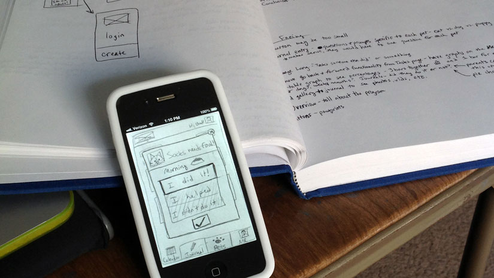
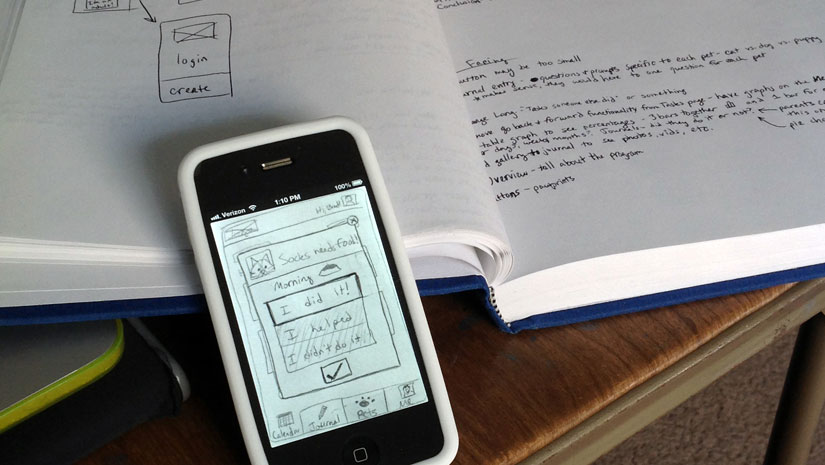
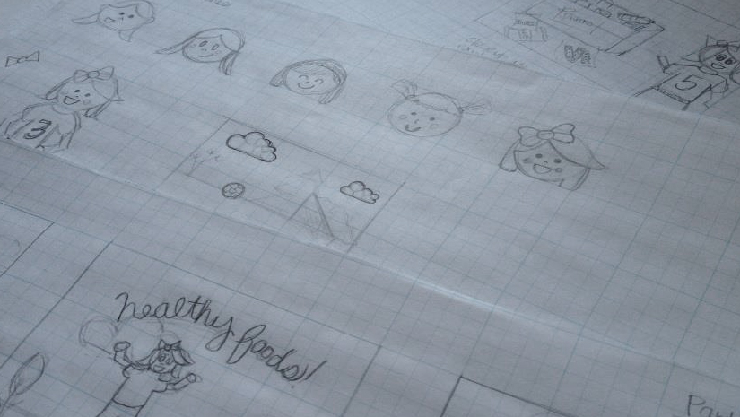
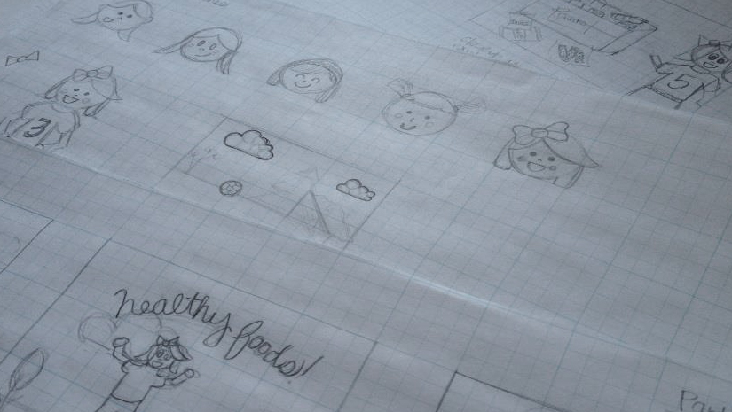
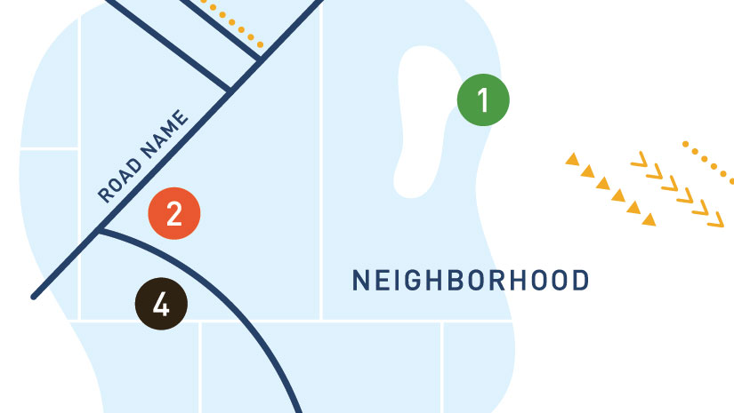
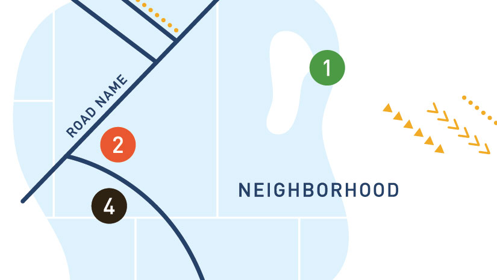

Redesigning a Church
Sarah Fukatsu
A church may be a way of life, but it also functions on a similar level as an organzation. Therefore, it also needs a strong identity to move forward and grow.
The Unification Church has existed for years, and has a dominant symbol it has used, but overall, has lacked a focus in what its trying to convey. It's a way of life, therefore it has that advantage, but in order to maintain its members, and continue growth, the church needs a rebrand, and a redesign of the identity. I am creating a messaging strategy, and a visual language to convey the values of the faith that will speak to the members.
Sarah has always been inclined towards the arts. It began with performing arts, and slowly moved into a visual arts, as she created drawings of her stuffed animals, and later, used all mediums of fine arts in high school. But her love of learning and friendships with peers outside of the arts showed her that she would enjoy a life and career that goes beyond just the arts. She enjoys sports, languages, traveling, working with her faith community, music, and napping.


 



 


 
